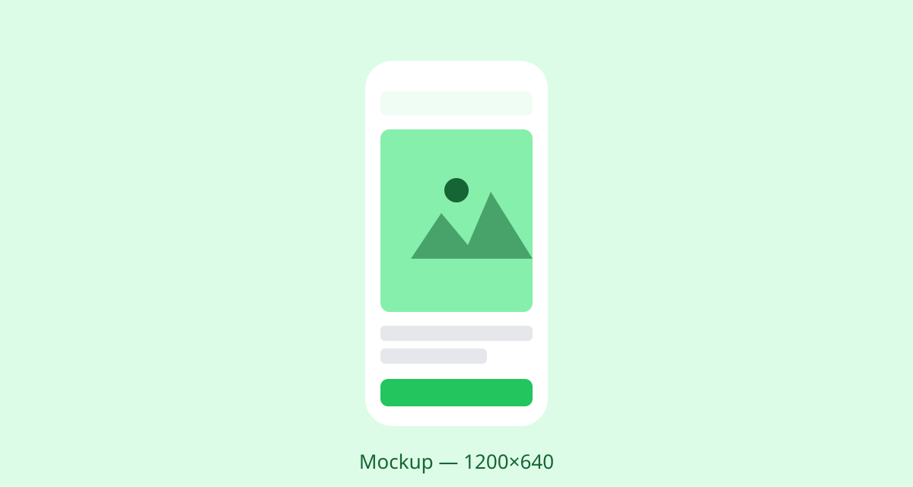
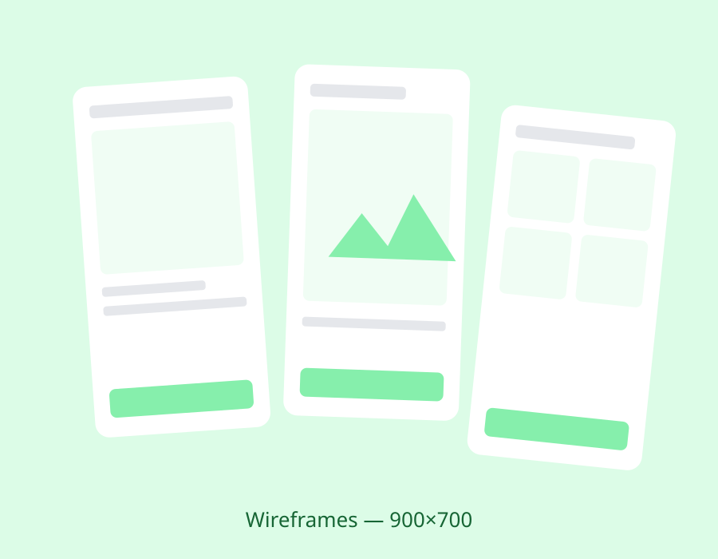
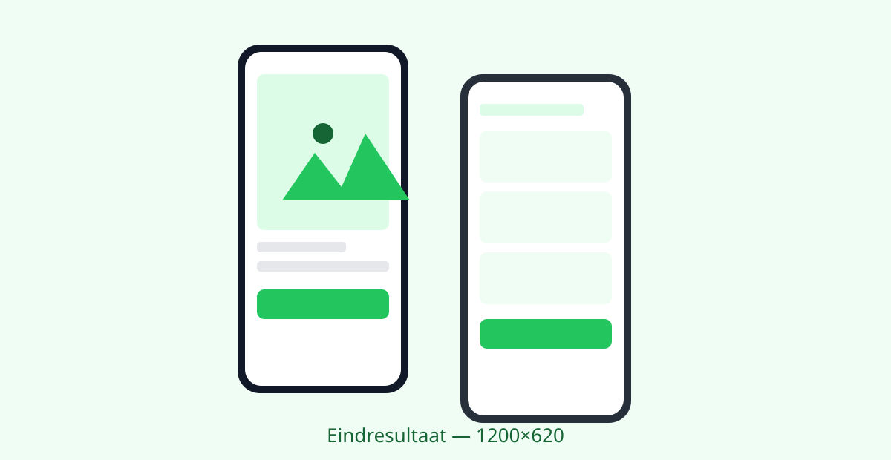

Eerstejaars studenten
Kennen de campus nog niet en moeten onder tijdsdruk hun lokaal vinden.
Een web-app die studenten, bezoekers en mensen met een beperking helpt om snel en stressvrij hun weg te vinden op de Windesheim campus.

Studenten en bezoekers op de Windesheim campus hebben moeite met navigeren. Lokalen zijn lastig te vinden, drukte is niet zichtbaar en het is onduidelijk in welk gebouw je moet zijn. Dit leidt tot stress en te laat komen. Uit ons onderzoek bleek dat lokalen vinden een groter probleem is dan gebouwen vinden, vooral voor eerstejaars. Meerdere respondenten gaven aan weleens te laat te zijn gekomen; de meest gebruikte navigatiemethoden waren de fysieke plattegrond en gewoon rondlopen.
Het doel: een contextuele navigatie-UI die studenten stap voor stap begeleidt naar hun lokaal, met drukte-informatie, tijdsindicatie en toegankelijkheidsopties.
Ik werkte in een team van vijf studenten, samen met Chenhao Wu (ontwerp en onderbouwing), Ingmar de Ruiter en Daniël Verspuij (development) en Erik van der Reest (presentatie en documentatie). Mijn rol: het high-fidelity prototype uitwerken, het werkproces documenteren en het eindproduct presenteren.
Kennen de campus nog niet en moeten onder tijdsdruk hun lokaal vinden.
Beheersen het Nederlands niet, dus de app moet ook volledig in het Engels werken.
Hebben aangepaste routeopties nodig, zoals een rolstoelvriendelijke route.
Zijn onbekend met de campusindeling en komen er vaak maar één keer.
Op basis van het onderzoek prioriteerden we de functionaliteit met MoSCoW:
De flow bestaat uit vijf stappen: onboarding, zoeken (via lokaalcode of gebouw en verdieping), route bekijken, navigeren en aangekomen. In de low-fidelity fase testten we die flow eerst in grijstinten, zodat de discussie over structuur ging en niet over kleur.
Elk scherm toont slechts één actie: kies gebouw, kies verdieping, kies lokaal. Dat verlaagt de cognitieve belasting, juist onder tijdsdruk.
Drukte kreeg een eigen pagina, kleurgecodeerd in rood (druk), geel (normaal) en groen (rustig). Zo is er direct inzicht zonder het hoofdscherm te overladen.
Grote knoppen, een hoge-contrastmodus, een schakelaar voor rolstoelvriendelijke routes en taalkeuze, allemaal bereikbaar via instellingen met herkenbare iconen.

We legden het prototype voor aan drie testkandidaten, elk met dezelfde taken: navigeer naar een lokaal, vind de rolstoelvriendelijke route, annuleer een navigatie, zoek een rustig gebouw en zet de taal op Engels. De kern werkte: alle drie konden een lokaal opzoeken en de rolstoelroute vinden. Maar de tests legden ook drie problemen bloot, die we in de volgende iteratie hebben opgelost:
Testers zagen niet dat het routescherm verder scrolde. Een subtiele visuele hint maakt dat nu direct duidelijk.
De druktepagina werd niet door iedereen gevonden. Die kreeg een vaste, zichtbare plek in de navigatiebalk.
Eén tester kon een actieve navigatie niet stoppen. De annuleerknop staat nu op een prominente plek in het routescherm.
Een high-fidelity prototype dat de complete flow dekt: van zoeken via gebouw en verdieping tot stap-voor-stap navigatie met tijdsindicatie, drukte-informatie en een bevestiging bij aankomst.

Het onderzoek gaf een duidelijk beeld van de problemen op de campus. Dat lokalen vinden het grootste pijnpunt bleek, onderbouwde onze keuze voor stap-voor-stap navigatie in plaats van een klassieke plattegrond.
Wat ik een volgende keer anders doe: vooraf beter met het team afspreken hoe de flow van de applicatie precies moet verlopen. Dat had verwarring in het ontwerpproces voorkomen.